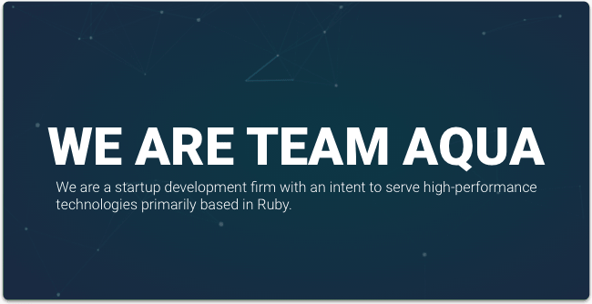

← Let's continue
Team Aqua

ERA ++
Early 2016
SKILLS ++
Ruby . Rails
C++
UI . UX
TECHNOLOGY ++
Ruby
Gosu
Sketchapp
The Project
Team Aqua is a student-led development group that focused on ruby and ruby on rails technology. Using the latest development platforms, Team Aqua developed a series of five modules which explored the boundaries of Ruby.
Take a peek
Deliverables
Each module explored a different facet of ruby technology; whether that be integrating with command line interfaces, or developing a GUI - Team Aqua was an outlet for creativity in development.
Each module created was created under GPL, and as such is available for future development.

Next Work →